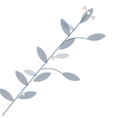

Cerimônia
Santuário Divina Misericórdia
12 de dezembro de 2026 · 10:30
Estr. do Ganchinho, nº 570 – UmbaráCuritiba – PR, 81930-165

Com a bênção de Deus e de seus pais, convidam para o sacramento de seu matrimônio
A realizar-se dia
12 de Dezembro de 2026às 10:30
"Sim, coisas grandiosas fez o Senhor por nós, por isso estamos alegres."— Salmos 126:3 —
[Espaço para a história do casal: como se conheceram, momentos marcantes e o que esperam desta nova fase.]
Cerimônia
12 de dezembro de 2026 · 10:30
Estr. do Ganchinho, nº 570 – UmbaráRecepção
Logo após a cerimônia
Rua Eponino Macuco, 74 – Capão RasoSua presença é o nosso maior presente! Mas, se desejar nos presentear, preparamos algumas sugestões com muito carinho.
Os presentes são divididos em cotas: escolha quantas quiser e contribua via Pix. Assim, todos podem participar da forma que for mais confortável.
Carregando presentes…